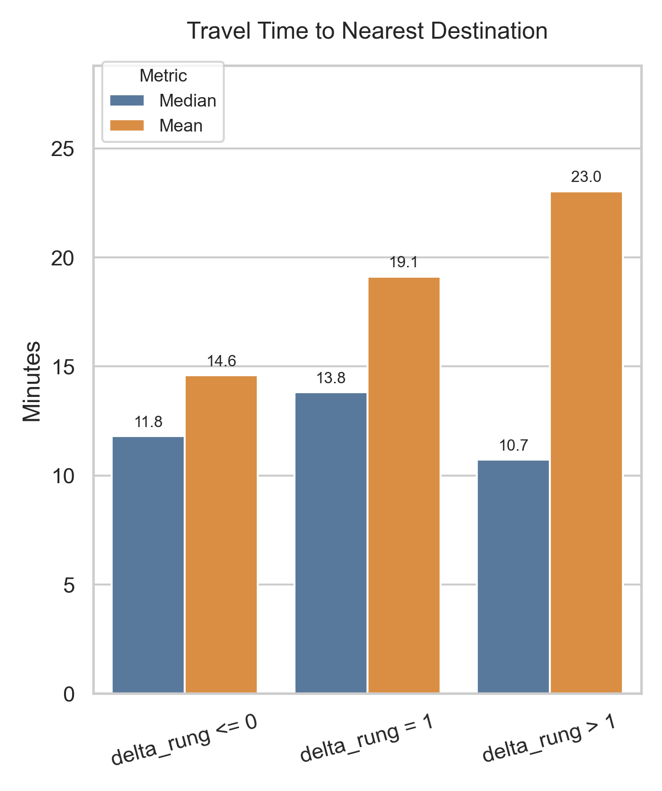
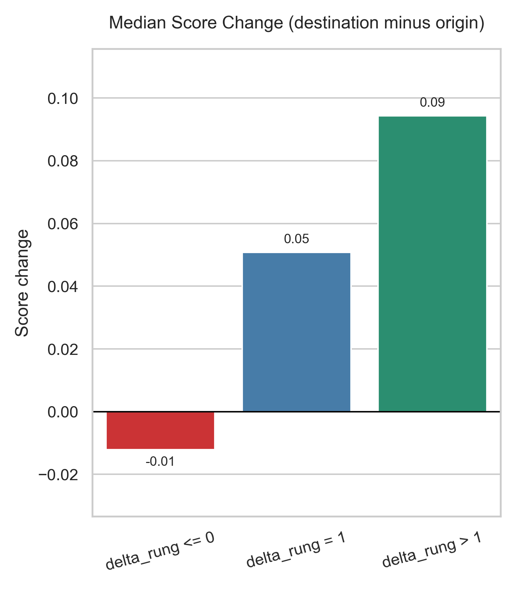
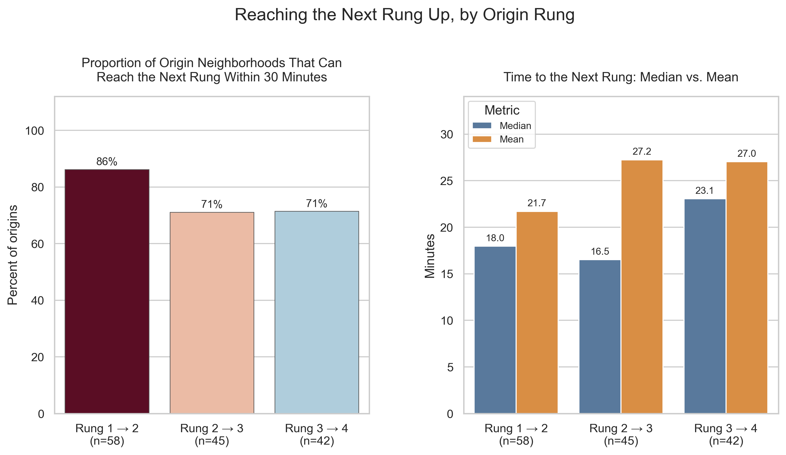
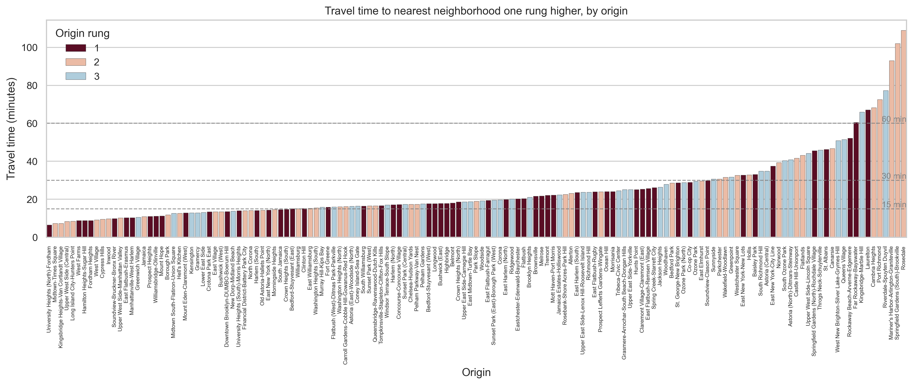
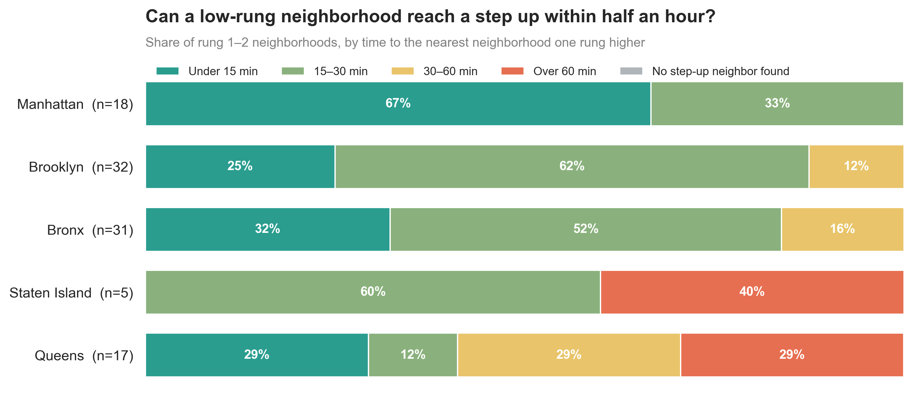
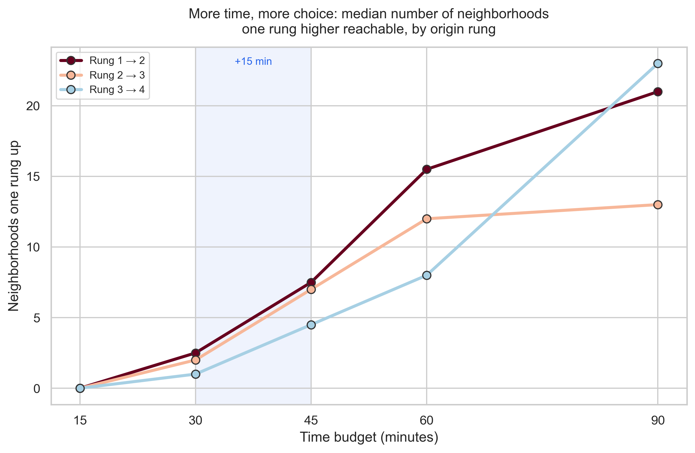

One Rung Up: In New York City, your most valuable connections are rarely next door.
Motivation
Reading Alex "Sandy" Pentland's Shared Wisdom, I was struck by a finding he draws from the Opportunity Atlas: when predicting children's life outcomes, the characteristics of the surrounding neighborhood matter most. Approximately one-quarter of this neighborhood effect is "locked in" by the time a child enters kindergarten, and approximately half is in place by fifth grade.1,2
I paired this with a second idea: bridging networks, the ties that connect one community to another, bringing pools of information, perspectives, and new opportunities.3 In his book, Pentland states:
"The most effective bridges are to communities that are just a little bit better off than your community. In other words, to help the lowest-income communities, the most useful connections are to communities that are one rung higher on the socioeconomic ladder."4
Putting the two together, I wanted to see how it applied to New York City's 197 residential neighborhoods by asking three questions of each neighborhood:
- Which neighborhood is nearest (by MTA subway)?
- What rung is that neighborhood on, compared with yours?
- Is it a single step up?
My analysis found that usually, it's not. For 69% of neighborhoods with a higher rung to reach, the nearest neighborhood by subway is in the same rung or a lower one. Most can still reach a step up within half an hour, but nine neighborhoods on the city's edges cannot reach one within an hour at all.
Approach
The analysis and visualizations below have two primary parts: a social mobility ladder and subway travel times. The neighborhood origin-destination dataset built here, composed of social mobility scores, rungs, and travel times, later became the knowledge base for the agent workflow in Bridging NYC. For the full data pipeline (data sources, transformations, and equations), please see that project's Methods and Appendix. In short:
- Social mobility ladder. Each neighborhood's score is the Opportunity Atlas measure of where children from lower-income families (parents at the 25th income percentile) end up in the national income distribution as adults, weighted by 2020 population. K-means clustering on that score gives four rungs, the smallest number that explains at least 90% of the variance (R² = 0.93). The score range and size of each rung are shown in Figure 7 of Bridging NYC.
- Subway travel times. Travel time between every pair of neighborhoods comes from a graph of the MTA subway schedule (GTFS), plus walking from each neighborhood to its five nearest stations.
Rung 4 has no higher rung to reach, so the analysis below covers the 145 neighborhoods in rungs 1 to 3.
Findings
The nearest neighbor is usually not one rung up
For 69% of neighborhoods in rungs 1 to 3, the nearest neighborhood by subway is in the same rung or a lower one. Only about a quarter are nearest to a neighborhood exactly one rung higher. Proximity mostly reconnects people with places like their own.
Explore this for yourself in Figure 1. Use the layers menu in the top right corner to show or hide each group, zoom in and out across New York City, and hover over any line to see quick facts about the two neighborhoods it connects: their names, rungs, mobility scores, and the subway travel time between them.
The pattern holds at every rung, and it is strongest for rung 3. Only 7 of the 42 rung 3 neighborhoods have a rung 4 neighborhood as their nearest neighbor.
| Origin rung | Total count of neighborhoods | Neighborhoods in same rung or lower | Neighborhoods one rung higher | Neighborhoods two or more rungs higher |
|---|---|---|---|---|
| Rung 1 | 58 | 39 (67%) | 15 (26%) | 4 (7%) |
| Rung 2 | 45 | 26 (58%) | 15 (33%) | 4 (9%) |
| Rung 3 | 42 | 35 (83%) | 7 (17%) | 0 |
| Total | 145 | 100 (69%) | 37 (26%) | 8 (6%) |
Table 1. How each neighborhood's nearest neighbor by subway compares with its own rung, for the 145 neighborhoods in rungs 1 to 3.
Distance is not what separates these groups. In every group the nearest neighborhood is a short ride, with a median of 11 to 14 minutes. Means run higher (15 to 23 minutes) because a few origins have long trips (Figure 2). What differs is the direction of the trip. Where the nearest neighborhood is one rung up, the median gain in mobility score is 0.05, roughly the distance between neighboring rungs. Where it is the same rung or lower, the median change is slightly negative (Figure 3).


In Figures 2 and 3, delta_rung is the destination's rung minus the origin's rung: delta_rung ≤ 0 is the same rung or lower, delta_rung = 1 is one rung up, delta_rung > 1 is two or more rungs up.
Most neighborhoods can still reach one rung up within 30 minutes
Knowing that a neighborhood's nearest neighbor most likely will not be the desired one-rung step up, I asked: how long would it take to get to the next rung? The result is more encouraging than Figure 1 and Table 1. Most low-rung neighborhoods can reach a step-up neighborhood within 30 minutes: 86% of rung 1 neighborhoods and 71% of rungs 2 and 3. The median gain in mobility score from that one step is about 0.05 at every rung, so the step is a similar size wherever you start.

The gap between median and mean travel time for rungs 2 and 3 points to a long tail of hard-to-reach neighborhoods. Sorting every origin by its travel time to the next rung shows a smooth curve up to about 45 minutes, then a sharp climb. A small group of neighborhoods needs over an hour, and Rosedale needs almost two.

Geography explains most of that tail. Among rung 1 and 2 neighborhoods, every one in Manhattan reaches a step up within 30 minutes. In Queens, fewer than half do, and 29% need over an hour. Staten Island has only five low-rung neighborhoods, but two of them need over an hour.

From 30 to 45 minutes, one-rung-higher destinations triple
In practice, how far someone is willing to travel decides which neighborhoods are open to them. So I asked how the number of neighborhoods one rung higher changes as the time budget grows from 30 to 45 minutes. Those extra 15 minutes make a large difference. Within 30 minutes, a typical rung 1 neighborhood can reach two or three rung 2 neighborhoods. Within 45 minutes, it can reach seven or eight. Across all 145 neighborhoods, the share with at least three options nearly doubles, from 41% to 75%, and the share with no option at all is cut in half, from 23% to 11%.

The most common one-rung-up destinations are in Manhattan
More time opens up more destinations, but which ones? Setting time aside, I asked which one-rung-higher neighborhoods come up most often. I gave every neighborhood in rungs 1 to 3 a shortlist: its 10 closest neighborhoods exactly one rung higher, ranked by subway travel time, with no time limit. I then counted how many shortlists each destination appears on. The 10 destinations that appear most often are all in Manhattan, and they are the hubs shown in Figure 8. Together they appear on the shortlists of 124 of the 145 neighborhoods. East Midtown-Turtle Bay and the Financial District-Battery Park City each appear on 36 shortlists, and Hell's Kitchen on 35.
Explore the hubs in Figure 8. Use the layers menu in the top right corner to turn each destination's lines on or off, click a destination's marker for its number of origins and median trip, and hover over any line to see the origin, the destination, and the subway travel time between them.
The subway leaves nine edge neighborhoods without a step up within an hour
The hubs showed where step-up trips lead. Next I turned to the neighborhoods those trips leave behind: which ones cannot reach any neighborhood one rung higher within 60 minutes by subway? Nine met that bar, and all of them sit on the edges of the city: two in the northwest Bronx, five in southeast Queens, and two on Staten Island's North Shore.
- Kingsbridge-Marble Hill Bronx · rung 3
- Riverdale-Spuyten Duyvil Bronx · rung 3
- Cambria Heights Queens · rung 2
- Laurelton Queens · rung 1
- Springfield Gardens (South)-Brookville Queens · rung 2
- Rosedale Queens · rung 2
- Far Rockaway-Bayswater Queens · rung 1
- Port Richmond Staten Island · rung 2
- Mariner's Harbor-Arlington-Graniteville Staten Island · rung 2
Asking AI
My first use of AI in this project was simple. Long before it became part of the agentic recommendation workflow in Bridging NYC, I asked whether it would recommend new MTA subway stops to serve the deserts.
It went further and extended my work. It connected each desert to its nearest step-up neighbor and looked for public transit options other than the subway that could link them. Its findings are below.
Main finding
None of the nine neighborhoods are isolated once MTA buses are counted. Every one reaches a neighborhood one rung up within an hour at the standard $3 fare. The neighborhoods farthest from a station improve the most:
| Neighborhood | Subway only | With buses |
|---|---|---|
| Rosedale | 109 min | 53 min |
| Springfield Gardens (South)-Brookville | 102 min | 43 min |
| Mariner's Harbor | 93 min | 34 min |
| Riverdale-Spuyten Duyvil | 77 min | 59 min |
| Port Richmond | 72 min | 25 min |
| Cambria Heights | 68 min | 27 min |
| Laurelton | 67 min | 22 min |
| Kingsbridge-Marble Hill | 66 min | 46 min |
| Far Rockaway-Bayswater | 61 min | 46 min |
Subway-only times are from my dataset. Bus times are from AI: averaging weekday departures from 7 to 9 AM.
Other modes added little
The LIRR mainly helps Rosedale (53 to 42 minutes), and Springfield Gardens and Far Rockaway by a minute or two, at a higher fare. Metro-North, ferries, and express buses change nothing for the nine.
What the data supports for city design
- Faster, more frequent buses, rather than new subway stations, on specific routes. For the seven neighborhoods with no subway station within 800 meters (Cambria Heights, Laurelton, Mariner's Harbor, Port Richmond, Riverdale-Spuyten Duyvil, Rosedale, and Springfield Gardens (South)-Brookville), the bus is what connects them to the next rung. Bus lanes, signal priority, and better frequency on those bus routes would help directly.
- Better east-west links in the Bronx. Riverdale (59 min) and Kingsbridge (46 min) stay the slowest even with every mode included. Both rely on the Bx12 Select Bus along Fordham Road to reach Morris Park. This is the one place where the barrier is the shape of the network rather than missing stations.
What the data does not support
New subway stations for these nine neighborhoods. With buses included, their trips to the next rung are 22 to 59 minutes, so new stations are not justified on this measure alone.
Generated by a large language model from the outputs of this analysis.
From analysis to agentic workflow
The deserts in this analysis were defined by an arbitrary travel time threshold of 60 minutes. As noted earlier, how far someone is willing to travel decides which neighborhoods are open to them, and that limit differs from person to person. That idea of personal agency shifted how I ultimately decided to use AI. Between this analysis and Bridging NYC, the role of AI changed in the following ways:
- From the analyst's question to the user's. In this analysis, I asked AI a city-level question as an analyst. In Bridging NYC, it answers a personal request: given where a user is and how long they're willing to travel, which neighborhoods one rung higher are within reach?
- From open-ended to grounded. In this analysis, the model reasoned freely over my outputs. In Bridging NYC, its recommendation is grounded in the knowledge base built from this analysis.
Notes
- Alex Pentland, Shared Wisdom: Cultural Evolution in the Age of AI (Cambridge, MA: MIT Press, 2025), 43. ↩
- Raj Chetty et al., "The Opportunity Atlas: Mapping the Childhood Roots of Social Mobility," NBER Working Paper 25147 (2018), https://doi.org/10.3386/w25147; data accessed via "Neighborhoods Matter," Opportunity Insights, accessed March 3, 2026, https://opportunityinsights.org/neighborhoods/. ↩
- Pentland, Shared Wisdom, 39. ↩
- Pentland, Shared Wisdom, 44. ↩
Supplementary Materials
Notebook and data
The notebook (Lovethyneighbor.ipynb) runs end to end from raw data to every figure on this page. The raw inputs, the full results table (all_analysis.csv), and the interactive maps are in the repository.
Data sources
Opportunity Atlas, HUD 2010 to 2020 Census Tract Crosswalk, 2020 Decennial Census population, NYC Department of City Planning 2020 Neighborhood Tabulation Areas, and the MTA subway GTFS feed. Full citations and transformations are in the Bridging NYC appendix and its Supplementary Materials.